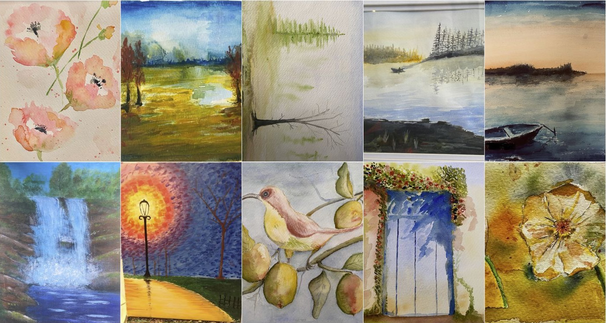

Alzheimer's disease and brain aging
Multimodal MRI, MRS, PET, and blood biomarkers to characterize early neurochemical, microstructural, and molecular changes across the Alzheimer's disease continuum.

Assistant Professor of Radiology | Mayo Clinic
Neuroimaging researcher in brain aging, dementia, multiple sclerosis, and women's brain health.
I use MRI, magnetic resonance spectroscopy, PET imaging, blood-based biomarkers, and cognitive measures to study brain aging, with a dedicated focus on women's brain health across reproductive aging, menopause, Alzheimer's disease risk, and multiple sclerosis.
Assistant Professor of Radiology, Mayo Clinic
Rochester, Minnesota
Neuroscience-focused doctoral research, Leiden University, The Netherlands
Multimodal MRI, MRS, PET, and blood biomarkers to characterize early neurochemical, microstructural, and molecular changes across the Alzheimer's disease continuum.
Imaging and blood-based biomarkers of reproductive aging, menopause, hormone therapy, and sex-related differences that influence long-term neurodegenerative risk.
Translational MRI, MRS, and PET approaches to study inflammatory and neurochemical markers of disease activity.
A major part of my work focuses on how female-specific and menopause-related factors shape brain aging and dementia risk. I study imaging biomarkers in women across reproductive aging, perimenopause, menopause, and postmenopause, including premenopausal bilateral oophorectomy, menopausal hormone therapy, vasomotor symptoms, insomnia, blood pressure, and sex differences in Alzheimer's disease and related brain-health outcomes.
See also my Women's Health Research Cluster profile.
See the full record on PubMed and Google Scholar.
Selected public grant and meeting dates I am tracking for neuroimaging, MRS, Alzheimer's disease, and women's brain health work.
Where East Meets West for Metabolic Imaging; MRS workshop in Kusadasi, Turkiye.
ConferenceStandard NIH cycle for exploratory and small research grant applications.
NIH grantISMRM-endorsed workshop on metabolic imaging and magnetic resonance spectroscopy.
WorkshopNext standard NIH cycle for exploratory and small research grant applications.
NIH grantImaging and biomarker questions around perimenopause, menopause, BSO, vasomotor symptoms, insomnia, blood pressure, and hormone therapy.
Notes on how MR spectroscopy measures relate to plasma amyloid and tau biomarkers in the early Alzheimer's disease continuum.
Translational imaging ideas for linking neurochemical and inflammatory markers across MRI, MRS, and PET.
Outside the lab, I keep a small painting practice focused on oil and watercolor portrait, landscape, seascape, and still-life studies.
View recent studies at firat_art_painting.

I am based in Mayo Clinic Radiology.